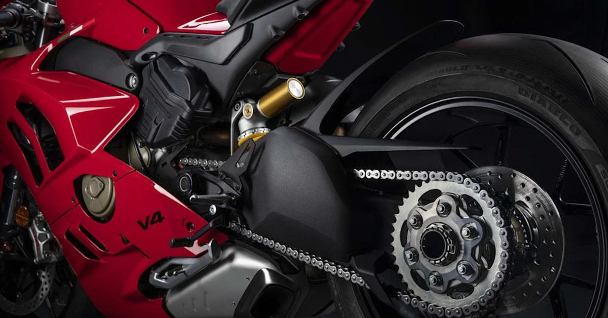
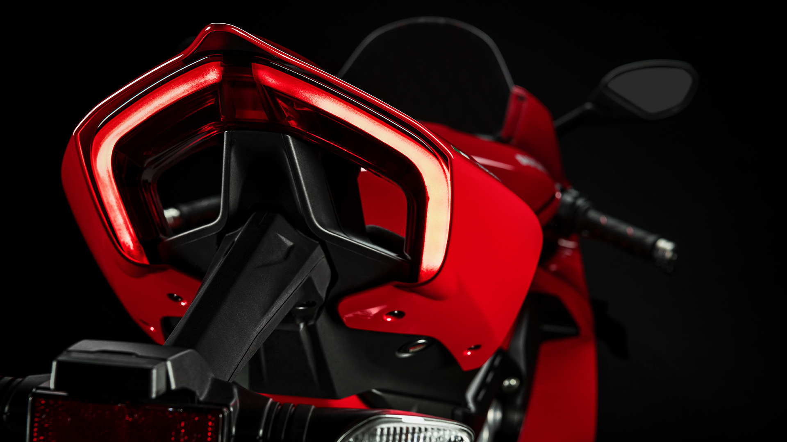

ducati panigale v4s
|
Make Model |
ducati panigale v4s |
|
price |
30 690 € |
|
Year |
2020 |
|
Engine |
Four stroke, desmosedici stradale 90° v4, rearward-rotating crankshaft, 4 desmodromically actuted valves per cylinder |
|
Capacity |
1103 cc / 67.3 cu-in |
|
Bore x Stroke |
81 x 53.5 mm |
|
Compression Ratio |
14.0:1 |
|
Cooling System |
Liquid cooled |
|
Exhaust |
4-2-1-2 system, with 2 catalytic converters and 2 lambda probes |
|
Induction |
Electronic fuel injection system. Twin injectors per cylinder. Full ride-by-wire elliptical throttle bodies. Variable length intake system |
|
Starting |
Electric |
|
Max Power |
214 hp / 157kW @ 13000 |
|
Max Torque |
124 Nm / 91.5 lb-ft @ 10000 |
|
Clutch |
Hydraulically controlled slipper and self-servo wet multiplate clutch |
|
Transmission |
6 speed |
|
Final Drive |
Chain, Front sprocket 16, Rear sprocket 41 |
|
Frame |
Aluminum alloy "Front Frame" with optimized stiffnesses |
|
Front Suspension |
Öhlins NIX30 43 mm fully adjustable fork with TiN treatment. Electronic compression and rebound damping adjustment with Öhlins Smart EC 2.0 event-based mode |
|
Front Wheel Travel |
120 mm / 4.7 in |
|
Rear Suspension |
Fully adjustable Ohlins TTX36 unit. Electronic compression and rebound damping adjustment with Öhlins Smart EC 2.0 event-based mode. Aluminium single-sided swingarm |
|
Rear Wheel Travel |
130 mm / 5.1 in |
|
Front Brakes |
2 x 330 mm semi-floating discs, radially mounted Brembo Monobloc Stylema® (M4.30) 4-piston callipers with Bosch Cornering ABS EVO |
|
Rear Brakes |
245 mm disc, 2-piston calliper with Bosch Cornering ABS EVO |
|
Wheels |
carbon |
|
Front Tyre |
120/70ZR17 |
|
Rear Tyre |
200/60ZR17 |
|
Rake |
24.5° |
|
Trail |
100 mm / 3.9 in |
|
Wheelbase |
1469 mm / 57.8 in |
|
Seat Height |
835 mm / 32.6 in |
|
Wet Weight |
195 kg / 384 lbs |
|
Fuel Capacity |
16 Litres / 4.3 US gal |
The 2020 version of the Panigale V4 and V4 S boosts performance even further and takes track riding to the next level for amateurs and pros alike. A series of refinements make for an easier, more user-friendly, less fatiguing ride while simultaneously making the bike faster not just on individual laps but over entire timed sessions.

Several
significant upgrades were implemented, to bring them closer to the the World
Superbike ready V4 R.
The Aero Pack provides enhanced airflow protection and improves overall vehicle
stability, enhancing confidence. The Front Frame, instead, modifies stiffness to
give better front-end 'feel' at extreme lean angles. Ducati and Ducati Corse
engineers have crunched the feedback/data numbers from customers all over the
world and Superbike World Championship events. Their analysis has led to a
series of aerodynamic, chassis, electronic control and Ride by Wire mapping
changes: designed to increase stability and turn-in speed, these changes make it
easier to close corners and ensure riders enjoy more confident throttle control.
New changes for top performances
The Panigale V4 MY2020 features new, specially developed Ride by Wire system mappings with several torque delivery control settings. Track-dedicated RbW mapping aligns rider demand with delivered torque more closely, resulting in smoother, more predictable throttle response. The new torque delivery control strategy lets the rider stabilise more easily on the desired throttle aperture through and out of the corners. Additionally, linearization of torque curves in gears I, II and III varies according to the selected Power Mode to minimise stability loss during acceleration.
MotoGP performance
The Desmosedici Stradale was developed to combine racing performance with all the necessities for road use. To maximise mid-range torque - so important for the enjoyability of motorcycles on roads open to traffic - and to achieve torque and power at slower speeds, the engine has a larger displacement than the MotoGP version, specifically 1,103 cm³. It delivers a power output of more than 155 kW (210 hp) at 13,000 rpm and a maximum torque of over 120 Nm (12.2 Kgm) from 8,750 to 12,250 rpm in the Euro 4 version.
engine
For Ducati, the V4
layout at 90° is the utmost expression of sportiness for a motorcycle engine. It
is no coincidence that it is the same solution used in the MotoGP Desmosedici
engines. The 90° V layout of the cylinders creates a natural balancing of
first-order forces without the need to resort to a balance shaft to eliminate
the vibrations that notoriously entail increases in weight and power absorption.
In addition to this primary benefit, which is extremely important for the
reliability and mechanical efficiency of an engine that reaches rotation speeds
greater than 14,000 rpm, there are others that make the configuration chosen by
Ducati the most technically refined.
Compared to a classic in-line four-cylinder, the lateral compactness of the
V-engine allows greater centralisation of the masses and makes it possible to
limit the weight on the front end of the bike. Furthermore, the shorter
crankshaft generates a smaller gyroscopic effect.
All these aspects have a positive impact on the bike's dynamics, helping to make
it light and fast when changing directions. The large space available between
the V of the cylinders made it possible to position the water pump and have a
large volume airbox (12.8 litres) to allow the Desmosedici Stradale to breathe
better.
Chassis
The Panigale V4 is
equipped with a 43 mm Showa Big Piston Fork (BPF) that provides fully adjustable
spring pre-load and compression and rebound damping. The fork bodies house
chrome sliders with Brembo radial caliper mountings. A Sachs steering damper
completes the front-end package. At the rear there is a fully adjustable Sachs
shock absorber, one side of which is attached to the Desmosedici Stradale engine
via a forged aluminium bracket.
The Panigale V4 S, instead, mounts an Öhlins NIX-30 fork, an Öhlins TTX36 rear
shock absorber and an Öhlins event-based steering damper. On this version
suspension and steering damper are controlled by the second-generation Öhlins
Smart EC 2.0 system which, among other things, features the new OBTi (Objective
Based Tuning Interface).
On both versions, fork and single-sided swingarm have softer, less pre-loaded
springs, resulting in more efficient use of suspension travel to even out pits
and ripples on the asphalt. The combination of reduced fork stiffness and higher
pre-loading gives better dive control during braking, resulting in easier, more
intuitive turn-ins, especially for the less expert rider.
Wheels and tyres
While the Panigale V4 mounts cast aluminium 5-spoke wheels, the Panigale V4 S is equipped with 3-spoke forged aluminium alloy wheels.
Braking system
The Panigale V4
range features Brembo Stylema® monobloc calipers, developed out of the already
high performance M50 calipers.
Stylema® calipers, machined from a solid aluminium alloy block, have lightening
zones on the body and attachment bushings; compared to the M50, these zones make
them visibly more compact and lighten each caliper by 70 g without affecting
stiffness. Other improvements on the internal ventilation front have made for
more consistent efficiency.
Because of their extreme stiffness, Stylema® calipers offer outstanding
hydraulic efficiency; this means riders can count on excellent braking
responsiveness, limited brake lever travel and first-rate 'feel'.
The dual Brembo calipers, each mounting four 30 mm pistons, bite down on 330 mm
discs to give exceptional braking power. At the rear, instead, the system mounts
a single 245 mm disc with a 2-piston caliper. Braking is aided by the ABS
Cornering EVO system, which uses the ultra-light 9.1MP control unit.
Latest-generation electronic controls
The Panigale V4 features a latest-generation electronics package based on a
6-axis inertial platform which instantly detects the bike's roll, yaw and pitch
angles.
The electronics package oversees every aspect of the ride: some controls
supervise start, acceleration and braking, others govern traction and others
again lend a helping hand on corners and out-of-the-corner stretches.
- ABS Cornering EVO
- Ducati Traction Control (DTC) EVO 2
- Ducati Slide Control (DSC)
- Ducati Wheelie Control (DWC) EVO
- Ducati Power Launch (DPL)
- Ducati Quick Shift up/down (DQS) EVO 2
- Engine Brake Control (EBC) EVO
- Ducati Electronic Suspension (DES) EVO
The operational parameters for each of these controls are associated by default with the three Panigale V4 Riding Modes. Riders can personalise parameters to suit their riding style or restore Ducati factory settings. DTC, DWC, DSC or EBC control levels can be adjusted quickly via the left switchgear.

Ducati Riding Mode strategy
Riding Modes provide users with three different pre-set riding styles (Race Riding Mode, Sport Riding Mode, Street Riding Mode) so that Panigale V4 performance can be adapted to the rider, the nature of the track/route and weather conditions. Changing the Riding Modes instantaneously changes the character of the engine, the electronic control parameters and, on the S version, the suspension set-up too. Riders can, of course, personalise parameters to suit their riding style and subsequently restore Ducati factory settings.